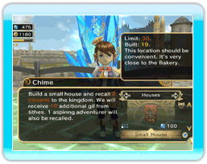

２．Selecting a Building Type
Next, summon Chime and select the "Let's build!" option from the menu. Then select the type of building you wish to build.
Note: You will only be able to build a few structures at the beginning of the game. More buildings will become available as you progress through the story.
There are several categories of buildings you can choose from, such as citizen shops, adventurer buildings, etc. You can switch between categories by pressing either +Control Pad left or right, and switch the type of building you wish to build by pressing +Control Pad up or down.